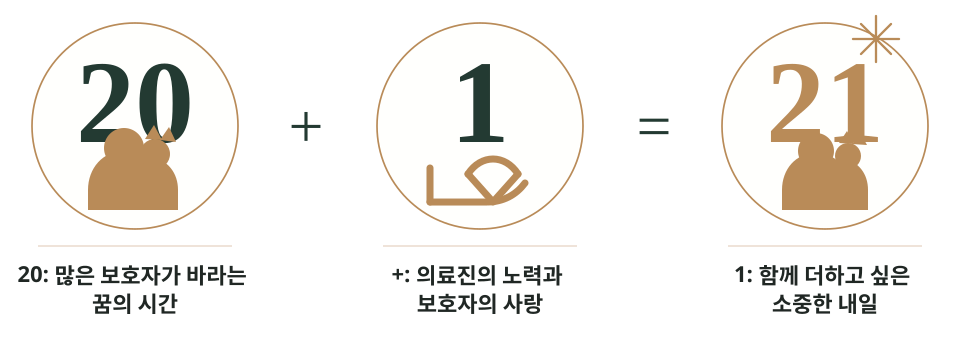

영상전공 수의사
2차 동물병원 7년 이상 근속, 다양한 케이스 기반의 초음파 진단
스무 살을 넘어, 스물하나까지.
아이의 시간을 더 건강하게,
스물하나 동물병원.

Brand Story
반려동물의 스무 살은 보호자에게 특별한 의미를 가집니다. 그 시간을 함께 맞이하는 것만으로도 큰 바람이자 목표가 됩니다. 스물하나 동물병원은 그 스무 살의 꿈에 한 살을 더 보태고 싶은 마음에서 시작했습니다.
Philosophy
스물하나 동물병원은 지금 아이에게 필요한 진료가 무엇인지 신중하게 판단하고, 검사 전 이유와 선택지, 우선순위를 보호자가 이해할 수 있도록 설명합니다.
Collaboration
2차 동물병원 7년 이상 근속, 다양한 케이스 기반의 초음파 진단
증상, 나이, 생활환경, 보호자의 상황까지 함께 고려하는 진료
Focus Care
나이, 품종, 생활습관, 기존 병력에 따라 필요한 검사 범위를 함께 정합니다.
혈액검사만으로 알기 어려운 장기 변화를 영상으로 더 세밀하게 살핍니다.
청진, 영상검사, 생활 변화, 보호자의 관찰을 함께 고려해 현재 상태를 평가합니다.
네이버 플레이스에서 진료시간과 예약 가능 시간을 확인하실 수 있고, 블로그에서는 보호자님이 자주 궁금해하는 진료 이야기를 확인하실 수 있습니다.
동물병원 주요 진료비용은 아래 안내 페이지에서 확인하실 수 있습니다.